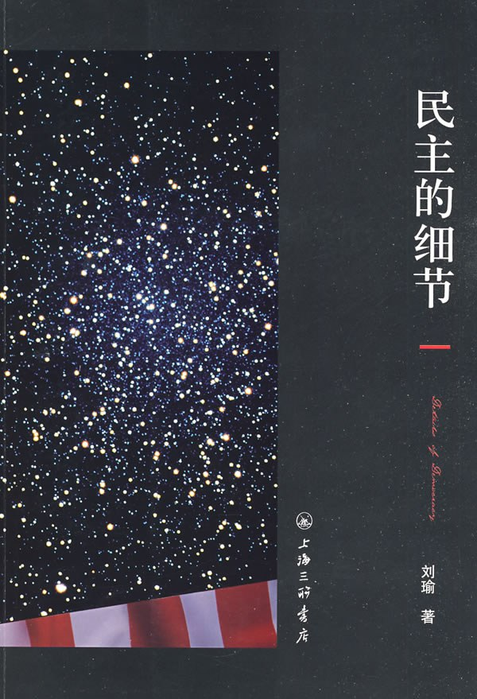

《民主的细节》

总体观点
清华大学政治学副教授刘瑜的成名作《民主的细节》，是新世纪以来中文世界探讨美国政治运作机制与民主法治实践最具启蒙意义的经典畅销书。
核心命题：民主不是空中楼阁式的宏大抒情，更不是一种完美无瑕的乌托邦，它由无数琐碎、繁复、甚至看似效率低下却环环相扣的“细节”构成——其本质是通过繁琐的程序性制度给权力套上紧箍咒，保障个体权利不被公权力随意践踏。
全书分为权力清单、权利清单、民主制度、自由与正义、市民社会五大核心板块，以生动平易、机智幽默的专栏笔触，将选举博弈、利益集团、言论自由判例与草根社区自治娓娓道来，展现了一个真实立体的现代政治生态。
核心观点
-
1. 民主不是选圣人的狂欢，而是通过权力制衡防范坏人肆虐的笨拙防错机制
制度设计的出发点是假设所有人（包括总统和法官）都是自私有缺陷的，因此必须让野心对抗野心，分权制衡。
尼克松因水门事件试图动用中情局阻碍联邦调查，但在国会马拉松听证会、特别检察官追查与最高法院判交录音带的合力围剿下不得不黯然辞职。 -
2. 繁琐冗长的法律程序，恰恰是防范暴政侵害公民权利的最坚实防护栏
效率低下有时是保护自由必须支付的必要制度成本；如果公权力抓人办案能神速如风，普通人的基本权利便荡然无存。
哪怕面对举国震惊的恐怖主义嫌疑人，警方在审判前也必须严格宣读米兰达警告并提供辩护律师，程序违法证据当庭作废。 -
3. 言论自由的试金石是对异端声音甚至极端刺耳言论的法定保护
主流大众喜欢的言论无需宪法特别保护，第一修正案存在的意义是捍卫哪怕99%的人极度反感讨厌的少数派表达权。
得克萨斯州抗议者在达拉斯市政厅前公开焚烧美国星条旗，最高法院最终以五比四裁定焚烧国旗属于象征性言论自由，受宪法保护。 -
4. 利益集团游说是代议制民主中各阶层博弈发声的合法管道而非原罪
在多元社会中，环保主义者、劳工联盟、步枪协会各自组织游说国会，政治就是不同利益诉求在阳光下透明讨价还价的妥协艺术。
全美步枪协会（NRA）之所以屡屡成功阻挠严格控枪法案，是因为其背后有数百万愿意在选举中积极给议员投票的狂热持枪会员作为坚实政治后盾。 -
5. 市民社会与社区草根自治是民主大厦不可动摇的地基
国家的生命力不在于华盛顿白宫的喧嚣，而在于千千万万普通百姓自发组织的家长教师会、社区消防志愿队、环保非政府组织与慈善募捐。
新奥尔良卡特里娜飓风灾后重建中，联邦政府官僚机构行动迟缓滞后，而民间的黑十字急救队、教会组织与童子军志愿者在第一时间奔赴灾区施粥救援。 -
6. 民主制度必然充满妥协与妥协带来的不完美，告别救世主崇拜是公民成熟的标志
真正的现代政治没有一劳永逸的终极方案，所有法案都是各方力量折中拉锯的产物，接受平庸与改良才是成熟社会的心智。
奥巴马医改法案在国会历经数十轮激烈修改，删除了争议最大的纯国营保险选项，虽然各方都不完全满意，但依然推动了三千万人获得基础医疗保障。
全书思维导图 · 知识脉络树
全书结构
-
第一部分：权力制衡篇
聚焦美国宪政体制对政府权力的苛刻限制与制衡齿轮，剖析总统权力的边界、特别检察官制度、国会听证会监督与弹劾机制的实际运转。
剖析特别检察官斯塔尔如何长达数年不依不饶调查克林顿白水事件与莱温斯基绯闻，展现独立司法权对总统个人权力的绝对限制与震慑。 -
第二部分：公民社会篇
将镜头拉向普通民众的日常生活与草根自治，记录家长教师会（PTA）、社区自治、环保非政府组织、独立媒体监督与平民参政的草根力量。
记录一个普通小镇居民如何因为家门口一颗百年老树被地方政府计划砍伐，通过搜集居民签名、在市政厅听证会上公开发言，最终成功迫使镇长修改修路规划。 -
第三部分：福利—平等篇
聚焦美国社会关于再分配与公平的尖锐辩论，深入剖析平权行动（Affirmative Action）、教育公平、公共医疗救助与富人征税等政策争议背后的理念冲突。
分析平权法案在大学录取中按种族配额优待少数族裔引发的争议，剖析美国社会在“起点平等”与“结果平等”之间的艰难抉择。 -
第四部分：法治—自由篇
深入剖析宪法与司法审判对公民基本权利的守护，涵盖言论自由极限判例、宗教与良心自由、隐私权界定及诉讼文化下的规则意识。
通过著名的新奥尔良私有产权拆迁判例与辛普森案程序正义，展示普通小业主如何依法维权，以及司法审判哪怕承担风险也要恪守法定程序的法治信仰。 -
第五部分：人物篇
通过对美国政坛关键人物（奥巴马、麦凯恩、布什、克拉克等）的近距离观察与思想肖像，透视政治领袖在新旧思潮、选民期待与现实权力结构中的作为与局限。
细致对比2008年大选期间奥巴马的变革演讲修辞与麦凯恩的传统老兵政治风格，剖析选民求变心理如何催生出历史首位非裔总统。